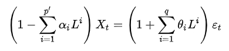
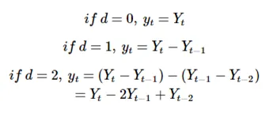
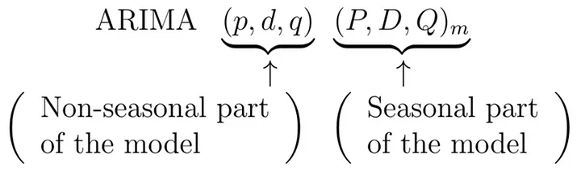

Introduction to ARIMA, SARIMA and Parameters Selection
Author
Shan, Haiwen
This project provides a detailed explanation of ARIMA, SARIMA (seasonal ARIMA) and how to do parameters selection on these models.
1. ARIMA
1.1 Introduction
The ARIMA (Autoregressive Integrated Moving Average) model has one additional parameter compared to the ARMA model, and it is denoted as the ARIMA(p, d, q) model. We learned that difference can be used to make data stationary. However, sometimes a first-order difference may not perfectly achieve stationarity. In such cases, the d parameter in the ARIMA model represents the number of difference steps required to make the data a stationary series. Let’s first take a look at the mathematical definition\(^{[1]}\).

Once the d parameter of ARIMA is determined, \(Y_{t}\) can be expressed as a differential equation at time t and then incorporated into the original ARMA model:

Some models can be seen as specific cases of ARIMA when ARIMA has fixed values for its parameters:
ARIMA(1,0,0): If we set d and q to 0, this becomes an AR(1) model (setting d to 0 alone creates an ARMA model). It implies that the data is stationary and autocorrelated.
ARIMA(0,1,0): This essentially creates a random walk model, with p and q equal to 0, indicating that the position at each time step is only related to the previous time step.
1.2 Prediction with ARIMA
Let’s use the close price of AAPL from 2019/01/01 to 2022/12/31 in this experiment. Here, we can use the auto.arima() function, which adjusts the p, d, q parameters based on the AIC method. If the model’s fit is not good, we can also adjust the parameters by observing the ACF and PACF.
suppressMessages(library(tseries))
Warning: package 'tseries' was built under R version 4.2.3
Here, we can use the auto.arima() function, which adjusts the parameters based on the AIC method. If the model’s fit is not good, we can also adjust the parameters by observing the ACF and PACF.
suppressMessages(library(forecast))
Warning: package 'forecast' was built under R version 4.2.3
model <-auto.arima(ts_aapl, seasonal=FALSE, test='adf',ic='aic')model
In this case, based on AIC and ADF, the program automatically selects the parameters of p=1, d=1, q=0. The next question is, how do we know if these estimates are correct?
1.3 Box-Pierce Approach
We can use the Box-Pierce approach to examine the ARIMA model. This test is performed on the residual series. We know that a good model should have stationary data, meaning that the noise should appear randomly. The null hypothesis of this test is that the residual series is white noise. Therefore, the p-value should be significantly greater than 0.05. Let’s take a look at the situation using the Box.Test() function:
The Box-Pierce Test tells us that the model is feasible. Generally, at this point, you may not need to continue with further tests. However, if the residual series does not pass the test, you will need to use an alternative method, such as analyzing the ACF and PACF, to re-determine the model parameters.
Furthermore, we still have unresolved questions:
More precise predictions: How to seasonality into consideration.
How to do order selection based on ACF and PACF.
2. SARIMA
ARIMA models are also capable of modelling a wide range of seasonal data. A seasonal ARIMA (SARIMA) model is formed by including additional seasonal terms in the ARIMA models we have seen so far. It is written as follows\(^{[2]}\):

Seasonal handling is not as simple as just setting the seasonal component to TRUE. It involves the use of the Fourier transform, as well as the partial autocorrelation coefficients.
\(m\) represents the seasonality period. For example, in \(ARIMA(1,1,2)(1,1,2)_9\), it essentially means that the data has a seasonality of 9, and the later (P, D, Q) represents the seasonal part of the ARIMA model. Therefore, the two sets of values may be different. The process is best illustrated via an example. Here we use the sample euretail from fpp library, which are the retail index of Europe by quarter.
The auto.arima() function uses nsdiffs() to determine the \(D\) (the number of seasonal differences to use), and ndiffs() to determine the \(d\) (the number of ordinary differences to use).
The model’s results correspond very well with our expectations and have also passed the Box Test.
3. Parameters Selection
We’ve discussed both ARIMA and SARIMA, but we haven’t talked about order selection. Of course, we have methods like AIC/BIC and ACF/PACF to help with model order selection, and both methods have their pros and cons. Here’s a brief summary that you can consider when using them:
pros
cons
AIC/BIC
More accurate
Suitable for selection of best model
Cost is expensive
Doesn’t take seasonality into consideration
ACF/PACF
Straightforward
Cost less
Can check White Noise
Subjectivity
Uncertainty in order Selection
However, in fact, both methods are often used together, as they excel in different areas. For example, you might first use AIC to let the program automatically tune the parameters and then fine-tune them using ACF/PACF. Alternatively, you can use ACF/PACF to identify several well-fitted models and then use AIC to choose the one with the smallest error.
Then, how can we select the parameters in AR, ARMA and ARIMA? There is a table\(^{[3]}\) here: